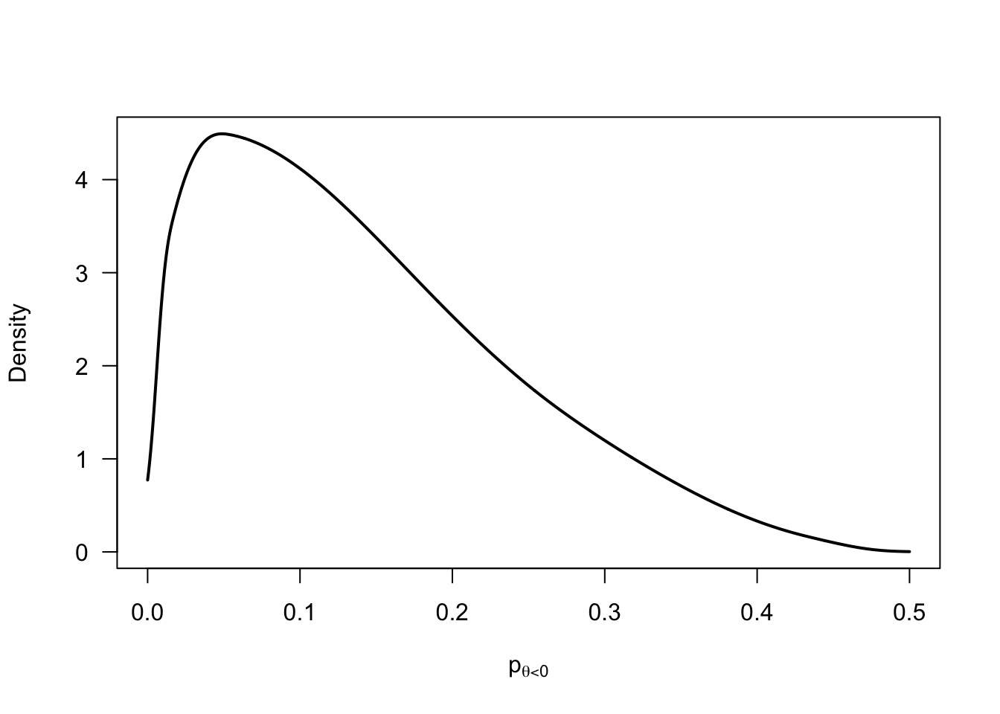
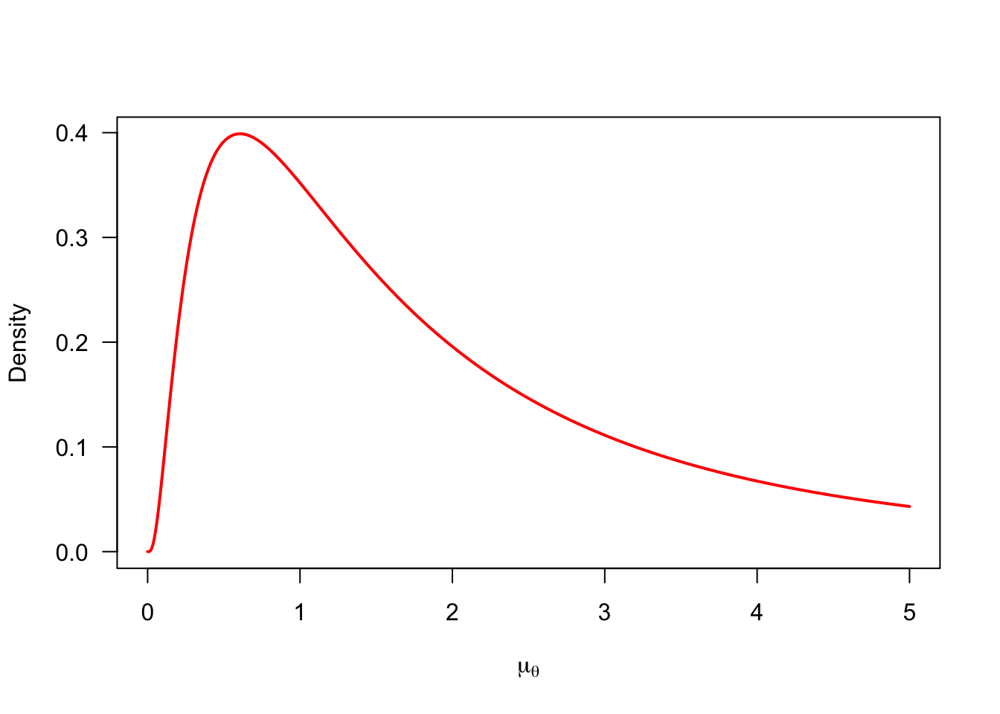
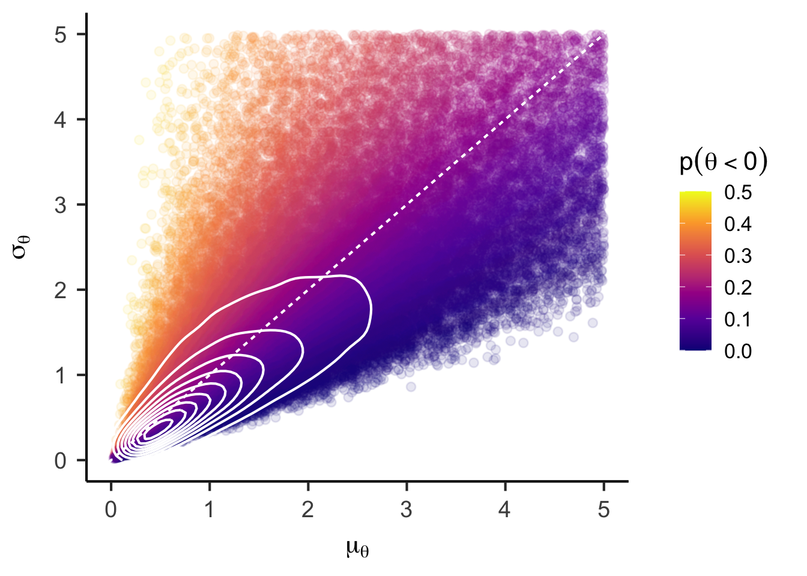
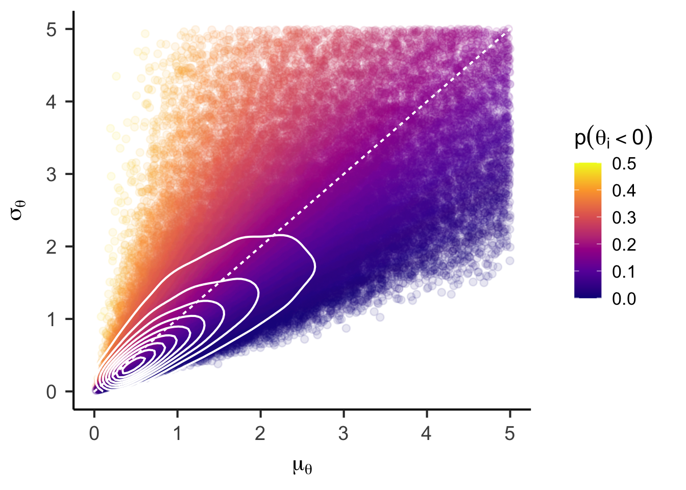
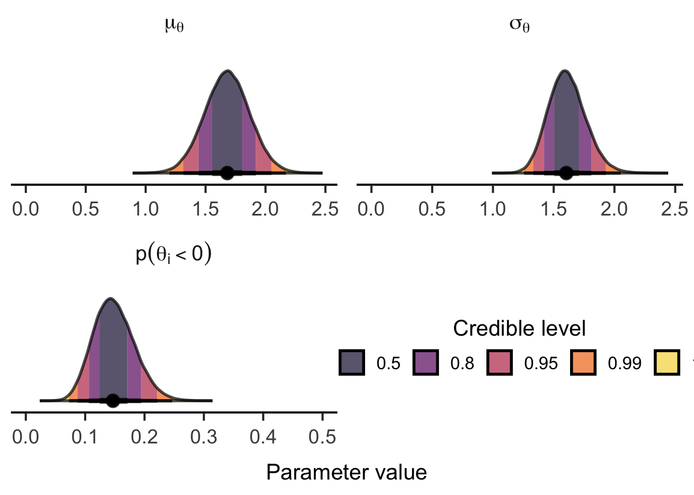
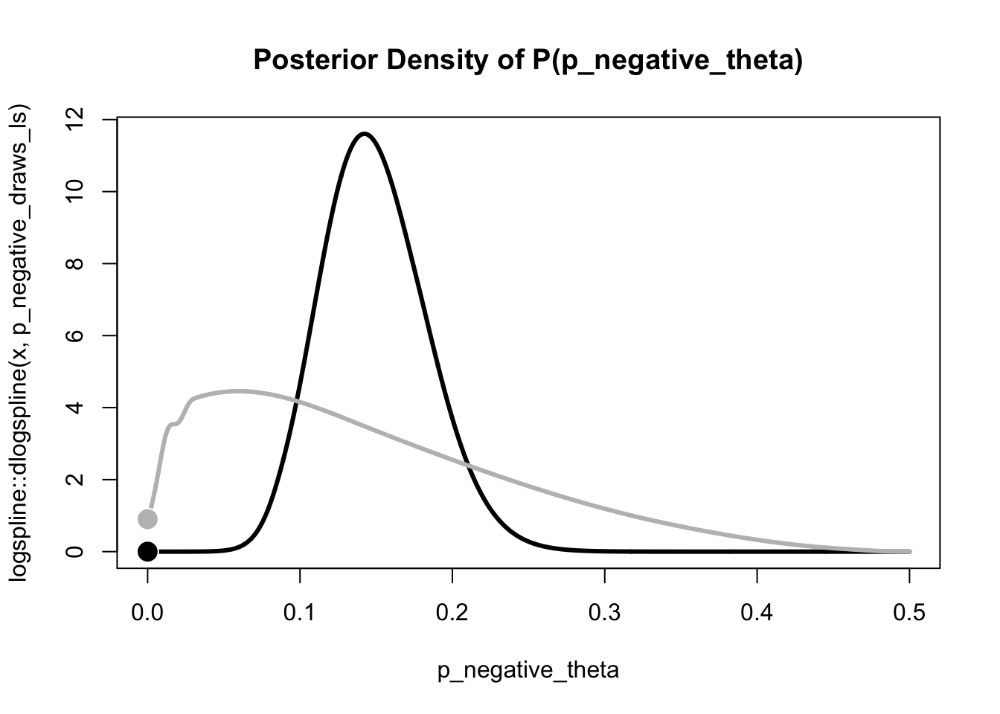
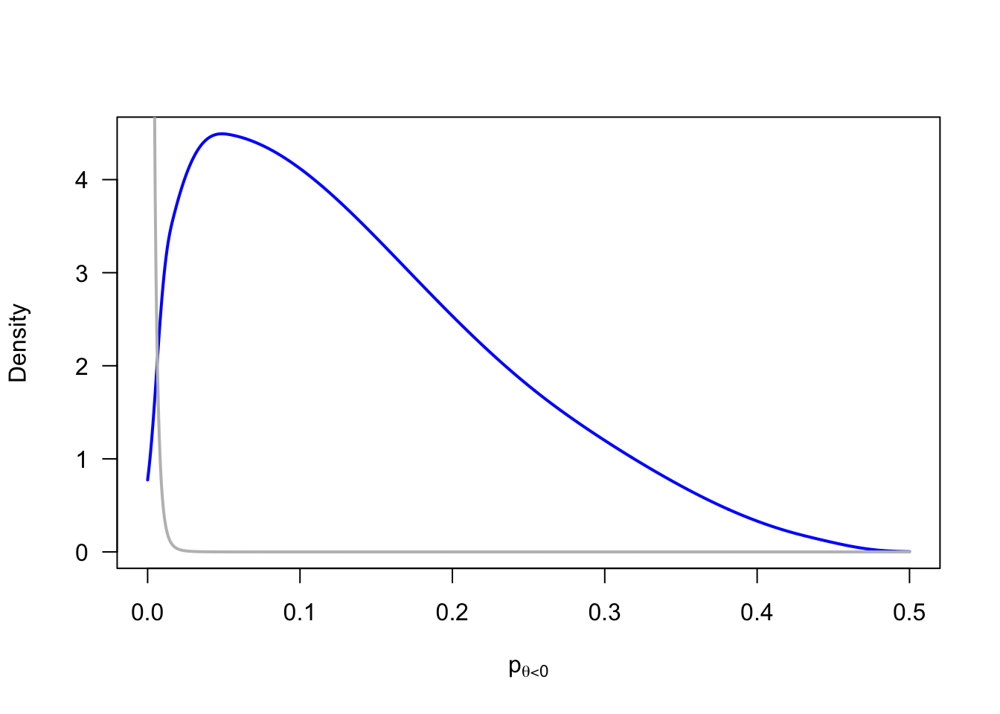
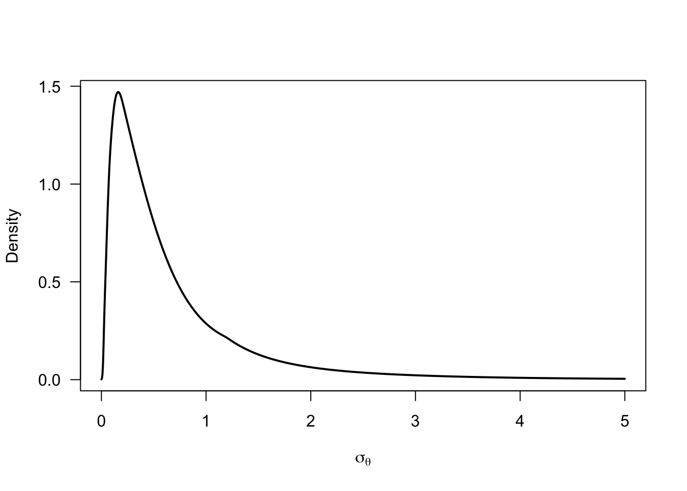
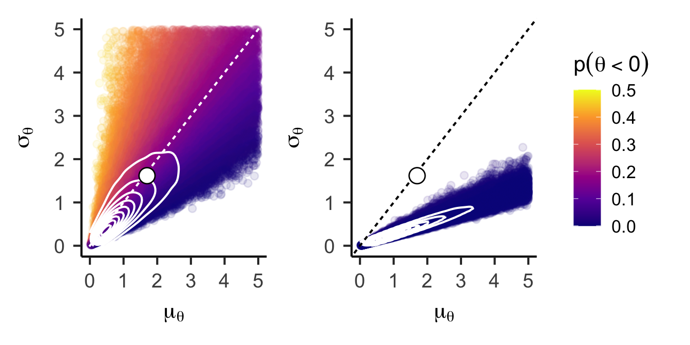

![]()
fle_data <- read.csv("./publishedMotnPostnDataToLoad/myOverallJoV_readyForQualitativeTest.csv")Inidividual Differences Investigation for Flash Lag Effect
For this analysis, we need multiple observations per participant to partition the observed variance in degrees of visual angle (dva) into true individual differences \(\sigma_\theta\) and error variance \(\sigma_\epsilon\), i.e. variance between observations within a participant. Hence, we collapse the data across the two sessions and estimate an overall mean ((Intercept), \(\mu_\theta\)) and individual differences around this mean for each participant (random effect ID, \(\sigma_\theta\)).
fle_lmer <- lmer(dva ~ 1 + (1 | ID), data = fle_data)
summary(fle_lmer)Linear mixed model fit by REML. t-tests use Satterthwaite's method [
lmerModLmerTest]
Formula: dva ~ 1 + (1 | ID)
Data: fle_data
REML criterion at convergence: 649.2
Scaled residuals:
Min 1Q Median 3Q Max
-2.8348 -0.3584 -0.0392 0.4377 3.3681
Random effects:
Groups Name Variance Std.Dev.
ID (Intercept) 2.617 1.618
Residual 1.114 1.055
Number of obs: 170, groups: ID, 85
Fixed effects:
Estimate Std. Error df t value Pr(>|t|)
(Intercept) 1.6971 0.1932 84.0000 8.782 1.63e-13 ***
---
Signif. codes: 0 '***' 0.001 '**' 0.01 '*' 0.05 '.' 0.1 ' ' 1Based on the assumption of a normal distribution of individual differences \(\theta_i \sim \mathcal{N}(\mu_\theta, \sigma_\theta)\), we can compute the proportion of participants with truely negative effects \(p(\theta_i<0)\) as follows:
\[ p(\theta_i<0) = \Phi\left(\frac{- \mu_\theta}{\sigma_\theta}\right) \]
mle_p_negative <- pnorm(
q = 0
, mean = fixef(fle_lmer)[1]
, sd = attr(VarCorr(fle_lmer)$ID, "stddev")
)
mle_p_negative[1] 0.1470737To test whether this proportion is credibly greater than zero, we will fit a Bayesian hierarchical model next.
Bayesian Hierarchical Model
Following the standard hierarchical model structure for individual differences, we define the following model:
\[ \begin{aligned} y_{ij} & \sim \mathcal{N}(\theta_i, \sigma_\epsilon) \\ \theta_i & \sim \mathcal{N}(\mu_\theta, \sigma_\theta) \\ \\ \mu_\theta & \sim \log \mathcal{N}(a_\mu, b_\mu) \\ \\ \sigma_\theta & = -\mu_\theta / \Phi^{-1}(0.5 \; p(\theta_i<0)) \\ p(\theta_i<0) & = \Phi(p^{*}_{\theta_i<0}) \\ p^{*}(\theta_i<0) & \sim \mathcal{N}(a_p, b_p) \\ \\ \sigma_\epsilon^2 & \propto 1/\sigma_\epsilon^2 \end{aligned} \]
We place a log-normal prior on the group mean \(\mu_\theta\) to ensure positive values (but we could replace this by something more flexible). We parameterize the individual differences standard deviation \(\sigma_\theta\) in terms of the proportion of individuals that show a negative flash lag effect (i.e., a flash lead effect) \(p(\theta_i<0)\) to directly estimate this quantity of interest. To improve sampling efficiency, we place a normal prior on the probit-transformed quantity \(p^{*}(\theta_i<0)\). Finally, we place a non-informative prior on the error variance \(\sigma_\epsilon^2\).
Prior distributions
p_negative_prior <- rnorm(1e5, mean = -2/3, sd = 2/3) |>
pnorm(0) |>
(\(x) x / 2)()
p_negative_prior |>
logspline::logspline(lbound = 0, ubound = 0.5) |>
(
\(fit) {
curve(
logspline::dlogspline(x, fit)
, from = 0, to = 0.5
, lwd = 2
, xlab = expression(p[theta[i] < 0])
, ylab = "Density"
, las = 1
, n = 1001
)
}
)()
curve(
dlnorm(x, meanlog = 0.5, sdlog = 1)
, from = 0, to = 5
, lwd = 2
, xlab = expression(mu[theta])
, ylab = "Density"
, las = 1
, n = 1001
)
mu_prior <- rlnorm(1e5, meanlog = 0.5, sdlog = 1)
sigma_prior <- -mu_prior / qnorm(p_negative_prior)
sigma_prior |>
logspline::logspline(lbound = 0) |>
(
\(fit) {
curve(
logspline::dlogspline(x, fit)
, from = 0, to = 5
, lwd = 2
, xlab = expression(sigma[theta])
, ylab = "Density"
, las = 1
, n = 1001
)
}
)()
unconstrained_joint_prior <- data.frame(mu = mu_prior, sigma = sigma_prior, p_negative = p_negative_prior) |>
ggplot() +
aes(x = mu, y = sigma, color = p_negative) +
geom_point(alpha = 0.1) +
stat_density_2d(color = "white", bins = 10) +
geom_abline(intercept = 0, slope = 1, color = "white", linetype = "22") +
# annotate("point", x = fixef(fle_lmer)[1], y = attr(VarCorr(fle_lmer)$ID, "stddev"), shape = 21, color = "black", fill = "white", size = 5) +
labs(
x = expression(mu[theta])
, y = expression(sigma[theta])
, color = expression(p(theta[i] < 0))
) +
scale_color_viridis_c(option = "C", limits = c(0, 0.5)) +
lims(x = c(0, 5), y = c(0, 5)) +
papaja::theme_apa(base_size = 16)
unconstrained_joint_priorWarning: Removed 17849 rows containing non-finite outside the scale range
(`stat_density2d()`).Warning: Removed 17849 rows containing missing values or values outside the scale range
(`geom_point()`).
Model estimation
pse_model <- readLines("./models/pse-unconstrained.stan") |>
paste(collapse = "\n")
fle_stan_data <- list(
N = nrow(fle_data) |> as.integer()
, n_subjects = length(unique(fle_data$ID)) |> as.integer()
, id = as.integer(as.factor(fle_data$ID))
, y = fle_data$dva
# Prior settings
, pi_mean = -2/3
, pi_sd = 2/3
, mu_theta_mean = 0.5
, mu_theta_sd = 1
)
fle_bayes <- rstan::stan(
model_code = pse_model
, data = fle_stan_data
, iter = 1e5/4 + 1000
, warmup = 1000
, chains = 4
, cores = 4
, seed = 123
)Table 1 shows the close agreement between the posterior means of the parameter estimates to the point estimates from the (restricted) maximum likelihood estimation via lmer().
data.frame(
parameter = c("mu_theta", "sigma_theta", "sigma_epsilon", "p_negative_theta")
, bayes = fle_bayes |>
summary(pars = c("mu_theta", "sigma_theta", "sigma_epsilon", "p_negative_theta")) |>
(\(x) x$summary)() |>
as.data.frame() |>
dplyr::pull("mean")
, mle = c(
fixef(fle_lmer)[1],
attr(VarCorr(fle_lmer)$ID, "stddev"),
sigma(fle_lmer),
mle_p_negative
)
) |>
knitr::kable()| parameter | bayes | mle |
|---|---|---|
| mu_theta | 1.6812211 | 1.6971440 |
| sigma_theta | 1.6107435 | 1.6177654 |
| sigma_epsilon | 1.0627287 | 1.0554625 |
| p_negative_theta | 0.1489232 | 0.1470737 |
fle_bayes |>
summary(pars = c("mu_theta", "sigma_theta", "sigma_epsilon", "p_negative_theta")) |>
(\(x) x$summary)() |>
tidyr::as_tibble(rownames = "parameter") |>
dplyr::mutate(
parameter = gsub("mu", "$\\\\mu", parameter) |>
gsub("sigma", "$\\\\sigma", x = _) |>
gsub("_(.+)", "_{\\\\\\1}$", x = _) |>
gsub("^p.+", "$p(\\\\theta_i<0)$", x = _)
) |>
knitr::kable(digits = 3)| parameter | mean | se_mean | sd | 2.5% | 25% | 50% | 75% | 97.5% | n_eff | Rhat |
|---|---|---|---|---|---|---|---|---|---|---|
| \(\mu_{\theta}\) | 1.681 | 0.001 | 0.187 | 1.315 | 1.556 | 1.681 | 1.806 | 2.050 | 136893.87 | 1 |
| \(\sigma_{\theta}\) | 1.611 | 0.000 | 0.153 | 1.332 | 1.505 | 1.604 | 1.708 | 1.931 | 110577.02 | 1 |
| \(\sigma_{\epsilon}\) | 1.063 | 0.000 | 0.083 | 0.917 | 1.005 | 1.058 | 1.115 | 1.239 | 59422.32 | 1 |
| \(p(\theta_i<0)\) | 0.149 | 0.000 | 0.034 | 0.087 | 0.124 | 0.147 | 0.171 | 0.221 | 122145.41 | 1 |
(tidybayes::gather_draws(
fle_bayes
, mu_theta, sigma_theta, p_negative_theta
) |>
dplyr::mutate(
.variable = factor(
.variable
, levels = c("mu_theta", "sigma_theta", "p_negative_theta")
, labels = c("mu[theta]", "sigma[theta]", "p(theta[i] < 0)")
)
) |>
ggplot() +
aes(x = .value, fill = after_stat(level)) +
stat_halfeye(fill_type = "segments", normalize = "panels", .width = c(.5, .8, .95, .99, 1), slab_color = "black", alpha = 0.7, fatten_point = 2, interval_size_range = c(1, 2)) +
annotate("point", x = c(0, 0.5), y = 0, color = "white") +
scale_fill_viridis_d(option = "B", begin = 0.9, end = 0.1) +
guides(
fill = guide_legend(
title = "Credible level"
, override.aes = list(color = NA)
, reverse = TRUE
, direction = "horizontal"
, title.position = "top"
, title.hjust = 0.5
)
) +
coord_cartesian(ylim = c(-0.05, NA)) +
facet_wrap(
~ .variable
, scales = "free"
, labeller = label_parsed
, ncol = 2
) +
labs(x = "Parameter value") +
papaja::theme_apa(base_size = 16) +
theme(
axis.line.y = element_blank()
, axis.ticks.y = element_blank()
, axis.text.y = element_blank()
, axis.title.y = element_blank()
# , legend.title.position = "top"
)) |>
lemon::reposition_legend("center", panel = 'panel-2-2')

Bayes factor approximations
Finally, we compute the Bayes factor in favor of the assumption of an unconstrained population distribution (\(p(\theta_i<0) > 0\)) over the strictly positive population distribution (stochastic dominance). One approach is to approximate this Bayes factor using the Savage-Dickey density ratio for \(p(\theta_i<0) = 0\).
# Extract posterior samples for p_negative_theta
p_negative_draws <- tidybayes::gather_draws(fle_bayes, p_negative_theta)
# logspline approximation of posterior density
p_negative_draws_ls <- logspline::logspline(
p_negative_draws$.value
, lbound = 0, ubound = 0.5
)
# logspline approximation of prior density
prior_ls <- rnorm(1e5, mean = fle_stan_data$pi_mean, sd = fle_stan_data$pi_sd) |>
pnorm() |>
(\(x) x / 2)() |>
logspline::logspline(lbound = 0, ubound = 0.5)
prior_density <- logspline::dlogspline(0, prior_ls)
posterior_density <- logspline::dlogspline(0, p_negative_draws_ls)
curve(
logspline::dlogspline(x, p_negative_draws_ls)
, from = 0, to = 0.5
, col = "black", lwd = 3
, main = "Posterior Density of P(p_negative_theta)"
, xlab = "p_negative_theta"
, n = 1001
)
curve(
logspline::dlogspline(x, prior_ls)
, from = 0, to = 0.5
, col = "grey", lwd = 3
, add = TRUE
, n = 1001
)
points(
x = c(0, 0)
, y = c(prior_density, posterior_density)
, col = c("white", "white")
, bg = c("grey", "black")
, pch = 21
, cex = 2
)

bayes_factor_10 <- prior_density / posterior_density
bayes_factor_10[1] 130718.3We find overwhelming evidence for the unconstrained population distribution. In other words, the assumption that noone exhibits a flash lead effect, seems highly implausible.
This approach is, however, approximate and conceptually problematic. Under the assumption of a normal population distribution, the probability of negative effects cannot be 0, \(p(\theta_i<0) \neq 0\). So let’s try another approach.
For an exact model comparison, we need to replace the assumed normal population distribution by a distribution family with support over the positive domain (e.g., truncated normal, log-normal, gamma, or inverse gamma distribution). This raises questions about the most appropriate distribution that lead us down the path of fitting and averaging multiple models. I will resist that temptation for now. Instead, I approximate the strictly positive population distribution by placing a prior on \(p(\theta_i<0)\) that concentrates its probability mass on very small probabilities.
p_negative_prior |>
logspline::logspline(lbound = 0, ubound = 0.5) |>
(
\(fit) {
curve(
logspline::dlogspline(x, fit)
, from = 0, to = 0.5
, col = "blue", lwd = 2
, xlab = expression(p[theta[i] < 0])
, ylab = "Density"
, las = 1
, n = 1001
)
}
)()
p_negative_prior <- rnorm(1e5, mean = -3.5, sd = 0.5) |>
pnorm(0) |>
(\(x) x / 2)()
p_negative_prior |>
logspline::logspline(lbound = 0, ubound = 0.5) |>
(
\(fit) {
curve(
logspline::dlogspline(x, fit)
, from = 0, to = 0.5
, col = "grey", lwd = 2
, add = TRUE
, n = 1001
)
}
)()

sigma_prior <- -mu_prior / qnorm(p_negative_prior)
sigma_prior |>
logspline::logspline(lbound = 0) |>
(
\(fit) {
curve(
logspline::dlogspline(x, fit)
, from = 0, to = 5
, lwd = 2
, xlab = expression(sigma[theta])
, ylab = "Density"
, las = 1
, n = 1001
)
}
)()
dominance_joint_prior <- data.frame(mu = mu_prior, sigma = sigma_prior, p_negative = p_negative_prior) |>
ggplot() +
aes(x = mu, y = sigma, color = p_negative) +
geom_point(alpha = 0.1) +
stat_density_2d(color = "white", bins = 10) +
geom_abline(intercept = 0, slope = 1, color = "black", linetype = "22") +
annotate("point", x = fixef(fle_lmer)[1], y = attr(VarCorr(fle_lmer)$ID, "stddev"), shape = 21, color = "black", fill = "white", size = 5) +
labs(
x = expression(mu[theta])
, y = expression(sigma[theta])
, color = expression(p(theta[i] < 0))
) +
scale_color_viridis_c(option = "C", limits = c(0, 0.5)) +
lims(x = c(0, 5), y = c(0, 5)) +
papaja::theme_apa(base_size = 16)
(
unconstrained_joint_prior +
annotate("point", x = fixef(fle_lmer)[1], y = attr(VarCorr(fle_lmer)$ID, "stddev"), shape = 21, color = "black", fill = "white", size = 5)
) +
dominance_joint_prior +
plot_layout(guides = "collect")Warning: Removed 17849 rows containing non-finite outside the scale range
(`stat_density2d()`).Warning: Removed 17849 rows containing missing values or values outside the scale range
(`geom_point()`).Warning: Removed 13091 rows containing non-finite outside the scale range
(`stat_density2d()`).Warning: Removed 13091 rows containing missing values or values outside the scale range
(`geom_point()`).

fle_stan_dominance_data <- list(
N = nrow(fle_data) |> as.integer()
, n_subjects = length(unique(fle_data$ID)) |> as.integer()
, id = as.integer(as.factor(fle_data$ID))
, y = fle_data$dva
# Prior settings
, pi_mean = -3.5
, pi_sd = 0.5
, mu_theta_mean = 0.5
, mu_theta_sd = 1
)
fle_dominance_bayes <- rstan::stan(
model_code = pse_model
, data = fle_stan_dominance_data
, iter = 1e5/4 + 1000 * 4
, warmup = 1000
, chains = 4
, cores = 4
, seed = 123
)I estimate the Bayes factor using bridge sampling.
unconstrained_ml <- bridge_sampler(fle_bayes, method = "warp3", repetitions = 30, silent = TRUE)
dominance_ml <- bridge_sampler(fle_dominance_bayes, method = "warp3", repetitions = 30, silent = TRUE)
bayes_factor(unconstrained_ml, dominance_ml)Estimated Bayes factor (based on medians of log marginal likelihood estimates)
in favor of x1 over x2: 2282346.08264
Range of estimates: 2276544.68664 to 2289875.56937
Interquartile range: 3615.17535We again find overwhelming evidence for the unconstrained population distribution. In other words, the assumption that nobody exhibits a flash lead effect, seems highly implausible. It is likely, however, that a comparison with a proper stricly positive population distribution would yield weaker evidence.
Bayes factor
Specification of stochastic dominance model using alternative population distribution. TBD